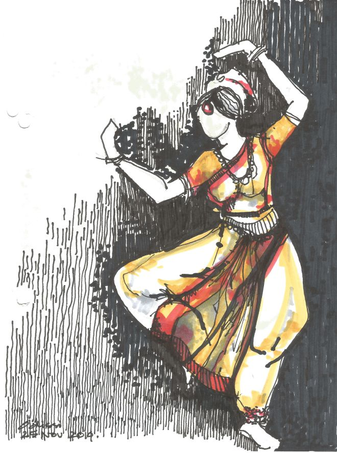

Origin of Bharatanatyam
Bharatanatyam is one of the oldest classical dance forms of India, originating in the temples of Tamil Nadu. This dance form was initially performed by Devadasis, women dedicated to temple service. It combines expressive hand gestures (mudras), intricate footwork, and storytelling through dance.
History of Bharatanatyam
The history of Bharatanatyam dates back to ancient times, with references found in texts like the Natya Shastra by Bharata Muni. Over the centuries, it evolved through various cultural influences and became a prominent performance art form in Indian classical dance. The revival of Bharatanatyam in the 20th century by pioneers like Rukmini Devi Arundale helped bring it to the global stage.
Elements of Bharatanatyam
Bharatanatyam is traditionally a team performance art that consists of a solo dancer, accompanied by musicians and one or more singers. It is described as classical art because the theory of musical notes, vocal performance, and the dance movement reflect ideas of the Sanskrit treatise Natya Shastra and other Sanskrit and Tamil texts, such as the Abhinaya Darpana.
Sequence of Bharatanatyam
Pushpanjili → Alarippu → Jatiswaram → Shabdam → Varnam → Padam → Tillana → Shlokam or Mangalam
Modern relevance of Bharatanatyam
Bharatanatyam rapidly expanded after India gained independence from British rule in 1947. It is now the most popular classical Indian dance style in India. In the second half of the 20th century, Bharatanatyam has been to Indian dance tradition what ballet has been in the West.